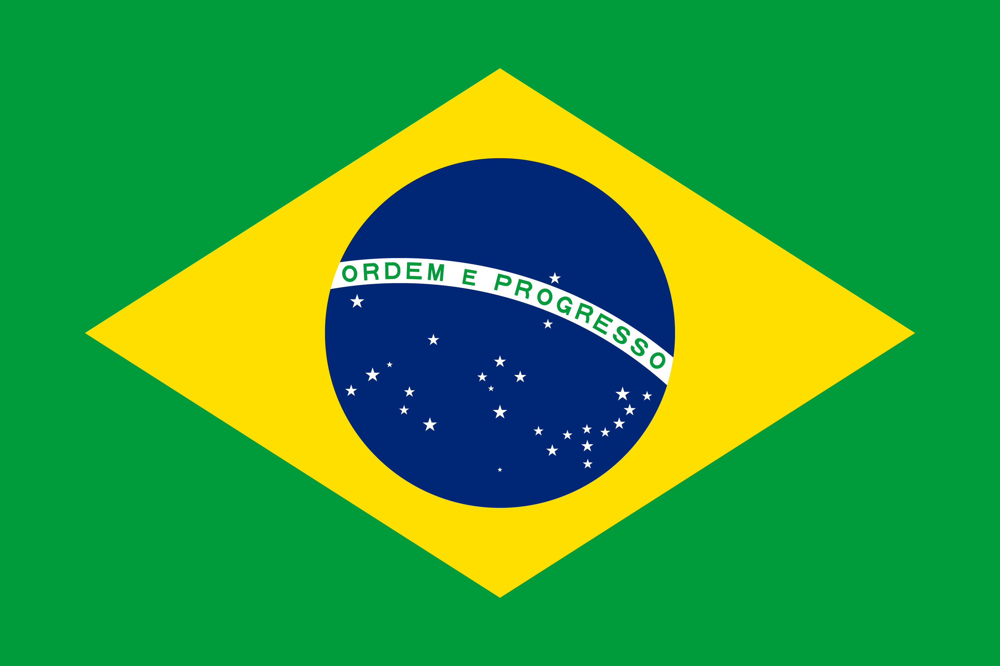
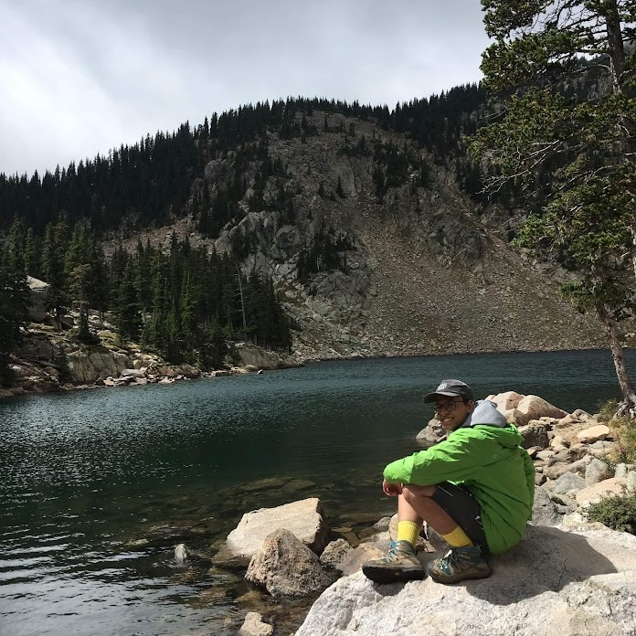
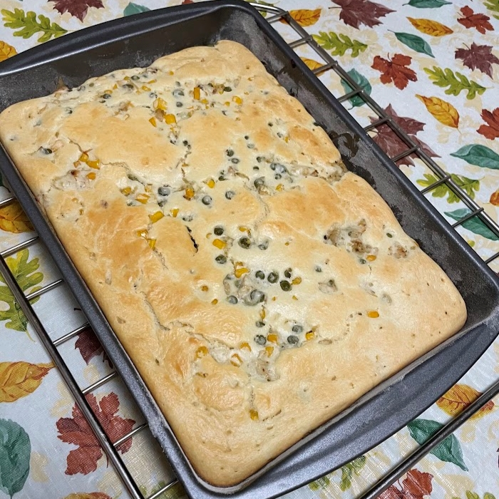
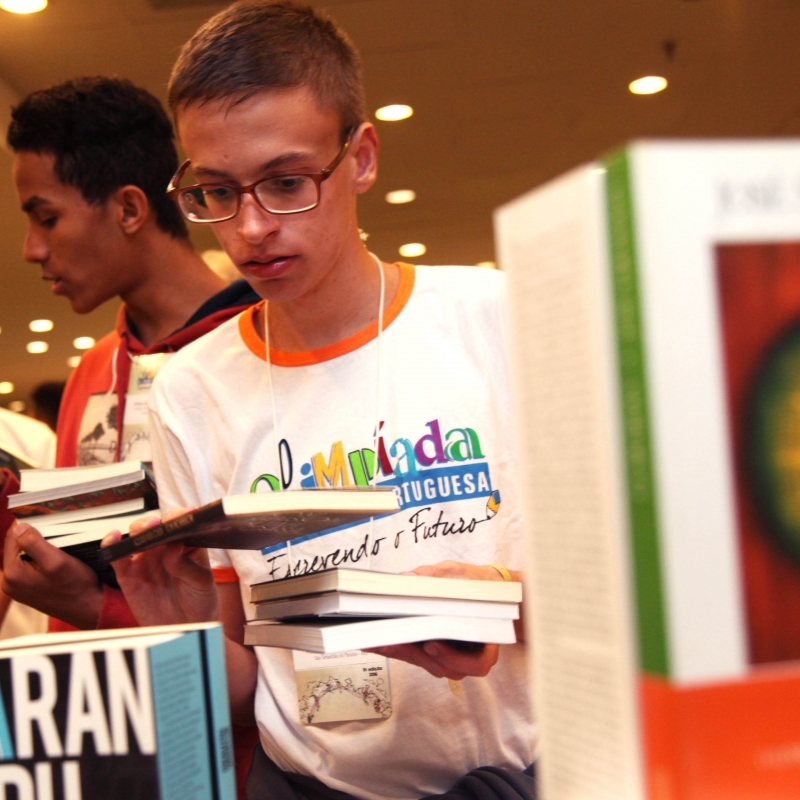

<!DOCTYPE html>
<html lang="en"></html>

<head>
    <title>Jonas Costa - Hobbies</title>
    <link rel="icon" href="vector_field.png">
    <link rel="stylesheet" href="home_screen.css">
    <link rel="preconnect" href="https://fonts.googleapis.com">
    <link rel="preconnect" href="https://fonts.gstatic.com" crossorigin>
    <link href="https://fonts.googleapis.com/css2?family=Chakra+Petch:wght@300;700&display=swap" rel="stylesheet">
  </head>

<body>

    <div class="sidenav">
        <div class="jonas_headshot">
            
        </div>
    

        <h1>Jonas Costa</h1>
        <div class="job">
            Software Developer
        </div>

        <div id="main_menu" class="main_menu">
            <a href="index.html">Home</a>
            <a href="about_me.html">About Me</a>
            <a href="projects.html">Projects</a>
            <a href="hobbies.html">Hobbies</a>
            <a href="contact.html">Contact</a>

            <div class="language">
                <a href="#">
                    
                </a>
                
                <a href="hobbies.html">
                    
                </a>
                
            </div>
            
        </div>

        
    </div>


    


  
    <!-- Page content -->
    <div class="main">
        <div class="title">
            <h2>Hobbies</h2>
        </div>

        <div class="item_content">
            <h3>Hiking</h3>
            
            <p>
                
                I started hiking at UWC-USA, the international high school I attended in New Mexico. Since my first trip, I have spent, in total, almost two months hiking and camping. I enjoy being in contact with nature, seeing animals in their natural environment, and the sense of community I feel when I hike in a group. Personally, it is a way to release stress and find joy in the small things around me.</p>
            
            <h3>Cooking</h3>
            
            <p>
                
                For a long time, preparing my meals was a source of anxiety and stress. However, after I left the meal plan my college offered, I had no other choice. Slowly, I became comfortable cooking and baking, and now it is one of the activities I enjoy doing the most. I find a lot of pleasure in knowing exactly how my dishes are prepared and seasoned. My favorite dishes to make are chicken pie, lentils with carrots, and any Brazilian food. </p>

            <h3>Reading</h3>
            
            <p>
                
                Growing up, I was always surrounded by books. I started reading when I was four and I have several memories of the time I spent on public libraries, avidly turning pages. My favorite genres are science fiction, drama, and adventure and the most fascinating piece I have ever read is “Story of Your Life,” by Ted Chiang. Reading allows me to develop empathy as well as gain a broader understanding about the world and its inhabitants. </p>    
        </div>
    </div>

    <script src="script.js"></script>
</body>


